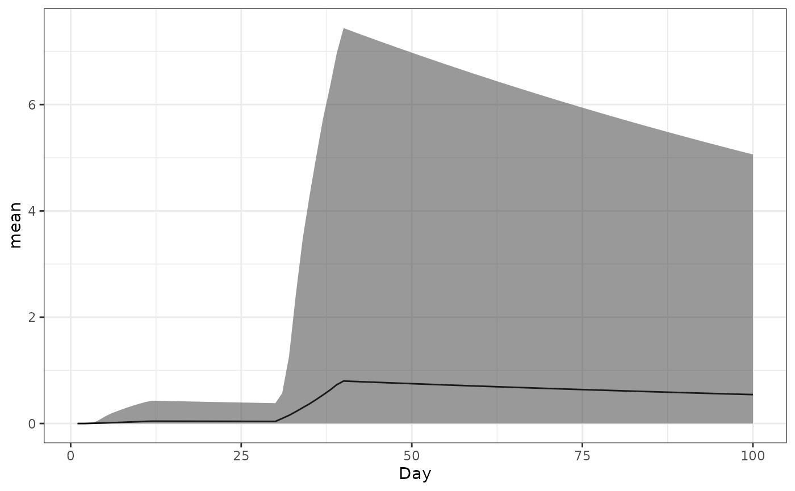
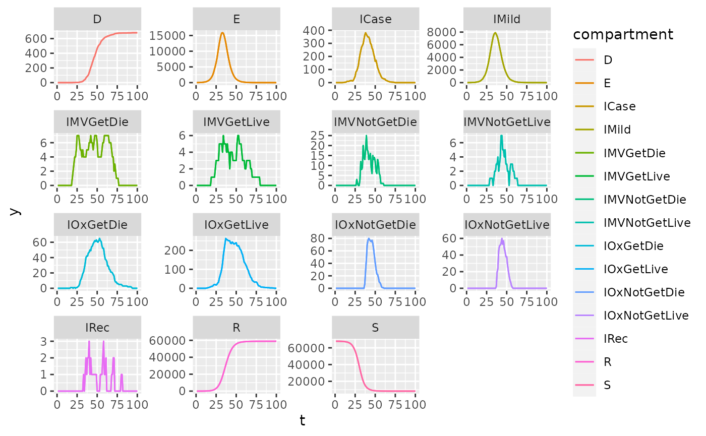

vaccine_notypes.Rmd
library(safir)
library(individual)
library(nimue)
#>
#> Attaching package: 'nimue'
#> The following object is masked from 'package:base':
#>
#> format
library(data.table)
library(ggplot2)Here we will set up the model with vaccinations. In this model only a single type of vaccine is distributed but it allows for multiple doses.
Start by making parameters.
iso3c <- "GBR"
pop <- safir:::get_population(iso3c)
pop$n <- as.integer(pop$n / 1e3)
contact_mat <- squire::get_mixing_matrix(iso3c = iso3c)
tmax <- 100
dt <- 0.5
R0 <- 4
# vaccine dosing
vaccine_doses <- 2
dose_period <- c(NaN, 28)
vaccine_set <- c(0, seq(from = 1e3, to = 1e4, length.out = tmax-1))
vaccine_set <- floor(vaccine_set)
# vaccine strategy
vaccine_coverage_mat <- strategy_matrix(strategy = "Elderly",max_coverage = 0.2)
next_dose_priority <- matrix(data = 0, nrow = vaccine_doses - 1,ncol = ncol(vaccine_coverage_mat))
next_dose_priority[1, 15:17] <- 1 # prioritize 3 oldest age groups for next dose
# base parameters
parameters <- safir::get_parameters(
population = pop$n,
contact_matrix_set = contact_mat,
iso3c = iso3c,
R0 = R0,
time_period = tmax,
dt = dt
)
# vaccine parameters
ab_parameters <- get_vaccine_ab_titre_parameters(vaccine = "Pfizer", max_dose = vaccine_doses,correlated = FALSE)
# combine parameters and verify
parameters <- make_vaccine_parameters(
safir_parameters = parameters,
vaccine_ab_parameters = ab_parameters,
vaccine_set = vaccine_set,
dose_period = dose_period,
strategy_matrix = vaccine_coverage_mat,
next_dose_priority_matrix = next_dose_priority
)Now we make the variables, events, and processes used in the model.
# create variables
timesteps <- parameters$time_period/dt
variables <- create_variables(pop = pop, parameters = parameters)
variables <- create_vaccine_variables(variables = variables,parameters = parameters)
# create events
events <- create_events(parameters = parameters)
events <- create_events_vaccination(events = events,parameters = parameters)
attach_event_listeners(variables = variables,events = events,parameters = parameters, dt = dt)
attach_event_listeners_vaccination(variables = variables,events = events,parameters = parameters,dt = dt)
# make renderers
renderer <- Render$new(parameters$time_period)
ab_renderer <- matrix(data = NaN,nrow = parameters$time_period,ncol = sum(parameters$population))
dose_renderer <- Render$new(parameters$time_period)
double_count_render_process_daily <- function(variable, dt) {
stopifnot(inherits(variable, "DoubleVariable"))
function(t) {
if ((t * dt) %% 1 == 0) {
ab_renderer[as.integer(t * dt), ] <<- variable$get_values()
}
}
}
# processes
processes <- list(
vaccine_ab_titre_process(parameters = parameters,variables = variables,events = events,dt = dt),
vaccination_process(parameters = parameters,variables = variables,events = events,dt = dt),
infection_process_vaccine_cpp(parameters = parameters,variables = variables,events = events,dt = dt),
categorical_count_renderer_process_daily(renderer = renderer,variable = variables$states,categories = variables$states$get_categories(),dt = dt),
double_count_render_process_daily(variable = variables$ab_titre,dt = dt),
integer_count_render_process_daily(renderer = dose_renderer,variable = variables$dose_num,margin = 0:vaccine_doses,dt = dt)
)
setup_events_vaccine(parameters = parameters,events = events,variables = variables,dt = dt)Run the simulation.
system.time(simulation_loop_vaccine(
variables = variables,
events = events,
processes = processes,
timesteps = timesteps
))
#> user system elapsed
#> 10.520 0.333 11.132Plot. This lets us check if people are getting vaccinated; Ab titre, averaged over the population, relative to the time of the first dose. It won’t look like the cohort plots because everybody gets their second dose at slightly different times, depending on availability.
# plot: ab titre
vaccinated <- variables$dose_num$get_index_of(set = 0)
vaccinated <- vaccinated$not()
ab_titre <- ab_renderer[, vaccinated$to_vector()]
start <- apply(ab_titre, 2, function(x){ which(abs(x - 0) > 2e-7)[1] })
ab_titre <- lapply(X = 1:ncol(ab_titre),FUN = function(x){
ab_titre[start[x]:nrow(ab_titre) , x]
})
ab_titre_dt <- data.table(
ab = unlist(ab_titre),
t = unlist(lapply(ab_titre, function(ab_titre){1:length(ab_titre)})),
id = rep(1:length(ab_titre), times = vapply(ab_titre,length,integer(1)))
)
ab_titre_quant_dt <- ab_titre_dt[, .(mean = mean(ab), lo = quantile(ab,probs =0.025) , hi = quantile(ab,probs = 0.975)) , by = .(t)]
ggplot(data = ab_titre_quant_dt) +
geom_line(aes(x=t,y=mean)) +
geom_ribbon(aes(x=t,ymin=lo,ymax=hi),alpha=0.5) +
theme_bw()
We also want to plot the number of people with each dose over time to check it’s working.
dose_out <- dose_renderer$to_dataframe()
colnames(dose_out)[2:4] <- as.character(0:2)
dose_out <- melt(as.data.table(dose_out),id.vars="timestep")
setnames(dose_out, "variable", "dose")
ggplot(data = dose_out) +
geom_line(aes(x=timestep,y=value,color=dose)) +
theme_bw()And the states.
saf_dt <- as.data.table(renderer$to_dataframe())
saf_dt[, IMild_count := IMild_count + IAsymp_count]
saf_dt[, IAsymp_count := NULL]
saf_dt <- melt(saf_dt,id.vars = c("timestep"),variable.name = "name")
saf_dt[, name := gsub("(^)(\\w*)(_count)", "\\2", name)]
setnames(x = saf_dt,old = c("timestep","name","value"),new = c("t","compartment","y"))
ggplot(data = saf_dt, aes(t,y,color = compartment)) +
geom_line() +
geom_line() +
facet_wrap(~compartment, scales = "free")